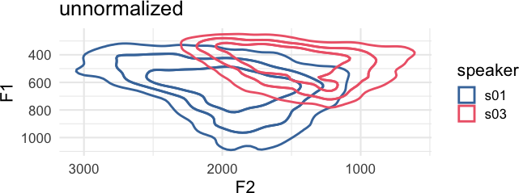
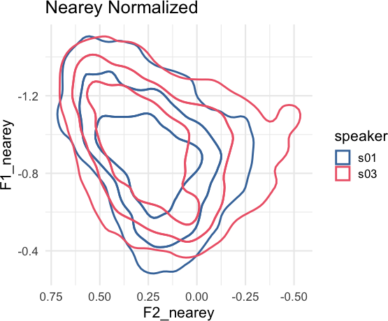
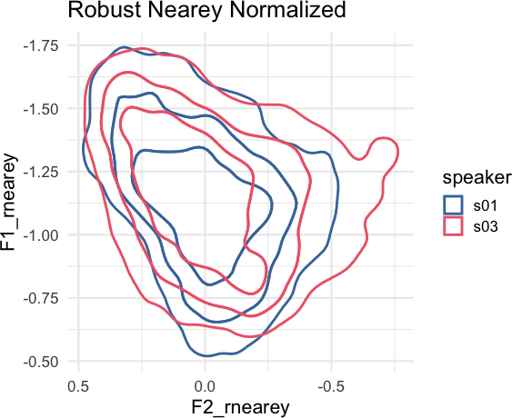

The goal of tidynorm is to provide convenient and tidy functions to normalize vowel formant data.
Installation
You can install tidynorm like so
install.packages("tidynorm")You can install the development version of tidynorm like so:
## if you need to install `remotes`
# install.packages("remotes")
remotes::install_github("jofrhwld/tidynorm")Example
Vowel formant frequencies are heavily influenced by vocal tract length differences between speakers. Equivalent vowels between speakers can have dramatically different frequency locations.
Plotting Options
options(
ggplot2.discrete.colour = c(
lapply(
1:6,
\(x) c(
"#4477AA", "#EE6677", "#228833",
"#CCBB44", "#66CCEE", "#AA3377"
)[1:x]
)
),
ggplot2.discrete.fill = c(
lapply(
1:6,
\(x) c(
"#4477AA", "#EE6677", "#228833",
"#CCBB44", "#66CCEE", "#AA3377"
)[1:x]
)
)
)
theme_set(
theme_minimal(
base_size = 16
)
)Plotting Code
ggplot(
speaker_data,
aes(
F2, F1,
color = speaker
)
) +
ggdensity::stat_hdr(
probs = c(0.95, 0.8, 0.5),
alpha = 1,
fill = NA,
linewidth = 1
) +
scale_x_reverse() +
scale_y_reverse() +
coord_fixed() +
labs(
title = "unnormalized"
)
The goal of tidynorm is to provide tidyverse-friendly and familiar functions that will allow you to quickly normalize vowel formant data. There are a number of built in functions based on conventional normalization methods.
speaker_data |>
norm_nearey(
F1:F3,
.by = speaker,
.names = "{.formant}_nearey"
) ->
speaker_normalized#> Normalization info
#> • normalized with `tidynorm::norm_nearey()`
#> • normalized `F1`, `F2`, and `F3`
#> • normalized values in `F1_nearey`, `F2_nearey`, and `F3_nearey`
#> • grouped by `speaker`
#> • within formant: FALSE
#> • (.formant - mean(.formant, na.rm = T))/(1)Plotting Code
speaker_normalized |>
ggplot(
aes(
F2_nearey, F1_nearey,
color = speaker
)
) +
ggdensity::stat_hdr(
probs = c(0.95, 0.8, 0.5),
alpha = 1,
fill = NA,
linewidth = 1
) +
scale_x_reverse() +
scale_y_reverse() +
coord_fixed() +
labs(
title = "Nearey Normalized"
)
There is also a tidynorm::norm_generic() function to allow you to define your own bespoke normalization methods. For example, a “robust Nearey” normalization method using the median, instead of the mean, could be done like so.
speaker_rnearey <- speaker_data |>
norm_generic(
F1:F3,
.by = speaker,
.by_formant = FALSE,
.pre_trans = log,
.L = median(.formant, na.rm = T),
.names = "{.formant}_rnearey"
)#> Normalization info
#> • normalized with `tidynorm::norm_generic()`
#> • normalized `F1`, `F2`, and `F3`
#> • normalized values in `F1_rnearey`, `F2_rnearey`, and `F3_rnearey`
#> • grouped by `speaker`
#> • within formant: FALSE
#> • (.formant - median(.formant, na.rm = T))/(1)Plotting Code
speaker_rnearey |>
ggplot(
aes(
F2_rnearey, F1_rnearey,
color = speaker
)
) +
ggdensity::stat_hdr(
probs = c(0.95, 0.8, 0.5),
alpha = 1,
fill = NA,
linewidth = 1
) +
scale_x_reverse() +
scale_y_reverse() +
coord_fixed() +
labs(
title = "Robust Nearey Normalized"
)